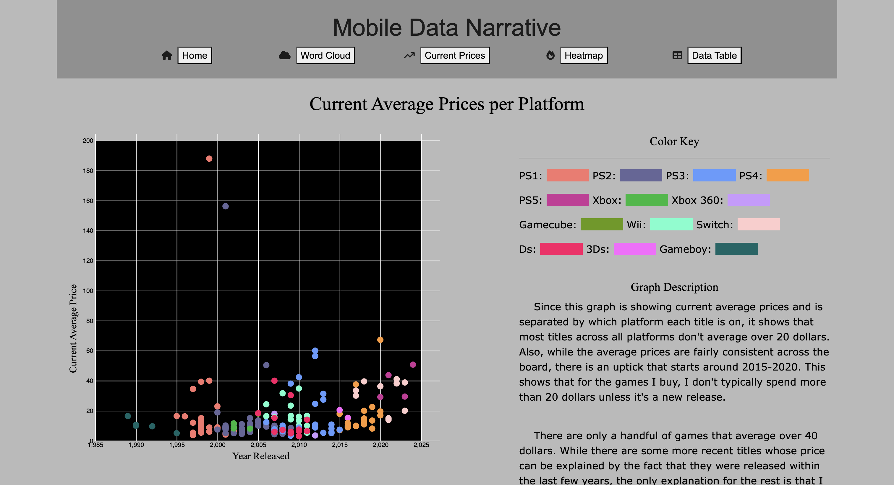

I am currently a junior at Boise State University majoring in Games, Interactive
Media,
and
Mobile
Technologies (GIMM) with a minor in Film and Television. Through utilizing visual
storytelling,
programming,
and game design, I have a passion for creating memorable and engaging experiences
through
interactive media.
Pills of Hatred was a solo project for the GIMM 290 class. Two players fight against each other
to
pick up the most items. My main focus for this project was gameplay, as all of the assets were
found
for free on the Unity store. I wanted to make the game feel extremely fast paced, so in addition
to fast and tight movement,
I added a multiplier meter that increases as players pick up items and fight each other.
Lock Wizard
Lock Wizard was a group project for the GIMM 270 class. Throughout the game, players must pick
locks that have been placed by an evil wizard. My main focus for this project was creating the
lock picking minigame, which I wanted to create as close to real life lock picking as possible.
This was the first time that I worked with virtual reality, and I had fun figuring out how to
set up the minigame for VR.
Yummy Gun
Yummy Gun is the first project I created for the GIMM program. I did all of the art and
programming myself, using Unity, C#,
Photoshop, and Clip Studio Paint. My focus for this project was creating a more challenging
experience for the player while
incorporating elements from the story, so I added a fuel meter based around the idea of eating
leftover food floating around in space.
Picture Perfect
Picture Perfect is a 2D platformer where players use an AR camera to scan a painting, entering a
platforming level based on that painting. This was a group project for the GIMM 110 class, where
my main focus was on programming.
I learned how to utilize AR in this game, using the Vuforia package to set up AR functionality.
The video above is a retrospective
of the project with perspectives from each member of the team.
Mobile Data Narrative

The Mobile Data Narrative is a class project where we each had to individually gather
our own data and present it through various graphs and charts of our choosing. This project
was my first major website project, and I learned how to use HTML, CSS and JavaScript to create
a website that presented my data. I also learned how to use D3.js and React to build
interactive graphs and charts.
Click here to view the Mobile Data
Narrative.
Pig-Kid
Pig-Kid was a short scene I wrote, directed, and edited for the FILM 290 class. I worked in a
group of five,
and each week we would rotate who did what job. This specific scene was my first time writing
and directing a script,
but I also got experience with being Director of Photography, Mixer/Boom Operator, and acting
for my group-members scenes.
The video above is a final cut of my scene, which was also the first time I color graded a
video.